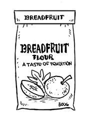

breadfruit flour
The product of dried and ground breadfruit. It it used to make cookies, cakes, pasta and a number of other recipes.
breadfruit
Breadfruit are prickly with yellow-green skin. Their appearances depends on the variety and growing conditions. When immature, the fruit is hard, and the flesh is starchy and a bit fibrous. Ripe breadfruit becomes soft, with the skin turning a yellow color, it also develops a creamy texture with a sweet aroma. Breadfruit is a high-energy food, containing all 9 EAA's. It's rich in protein, and contains vitamin C, calcium and iron.
Breadfruit trees can grow more than 80 feet tall, they are one of the highest yielding food plants with a single tree producing up to 450 pounds of fruit per year. Because of it's high-yield and energy content, it has the potential to address world hunger. Breadfruit is a delicious substitute for any starchy root vegetable. It's possiblet to use it to make pasta, gnocchi and various desserts.